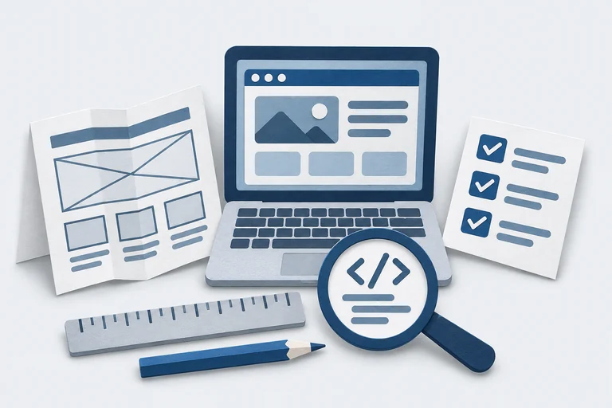

Help people find and use what you build.
Help people find and use what you build. Look for weaknesses before you share your site.
Look for weaknesses before you share your site. Check how your site protects students’ information.
Check how your site protects students’ information.Polish a website after its purpose and structure are clear.
An educator’s field guide to building with AI
Your classroom idea.
A more thoughtful website.
Turn an idea into a useful learning tool—with a design that fits, safer code, and student privacy in mind.
Choose the help you need
First time? Start hereRead an educator-friendly introduction, then take the full Markdown instruction file into your project. Markdown is a plain-text format your coding assistant can read.
Take the whole workbench
One download.
Room to keep building.
The complete VCC bundle contains this static website and every local component needed to use or host it. Unzip it and start with README.md.
Inside the bundle
- All three core Markdown instruction files
- Readable guides and educator introductions
- The SecureVCC reference and provenance files
- Project brief, prompt pack, and launch record
- AGENTS.md and CLAUDE.md pointer examples
- Hero art and both supplied visual explainers
- Resource review, site source, and rebuild scripts
Helpful GitHubs, with context
Optional tools for purposeful design, accessible interfaces, and security testing. These links complement the three core instruction files; no tool is installed or activated by downloading VCC.

Explore design systems, typography, and patterns that fit your users’ task.
Read DESIGN.md examples to discuss visual principles with an assistant.
Find automated accessibility issues in the actual rendered page.
Make main-journey browser checks repeatable.
Find possible exposed credentials in local files and Git history.
Inspect a running web application for potential security weaknesses.
Follow guided keyboard and manual checks alongside automated accessibility tests.
A center that can grow
VCC starts with the foundations of a useful educational website. New guides can address classroom testing, local-first tools, hosting, and maintenance as those resources are developed. Additions belong in the library, with a clear audience, downloadable files, source notes, and honest testing limits.
Suggest a resource or report a problem · Browse the source repository
Does this center collect student information?
This site has no account, upload form, analytics script, remote font, or application database. Search and reminders run in your browser without saving their contents. GitHub Pages receives normal hosting requests; external sites receive requests when you follow their links. Do not put student information in public issues or AI prompts.
Does using these files make my site compliant?
No. The guides help you identify risks and gather evidence. Legal requirements, contracts, school authorization, and technical controls need separate review appropriate to your project. Use the official sources linked in the education guide.
Can I use VCC without a coding assistant?
Yes. The introductions, planning templates, and review questions also work as a checklist for conversations with a developer or school technology team.